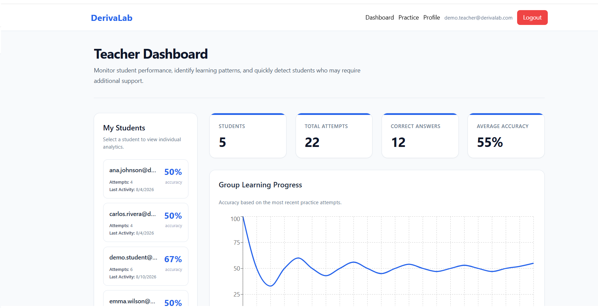
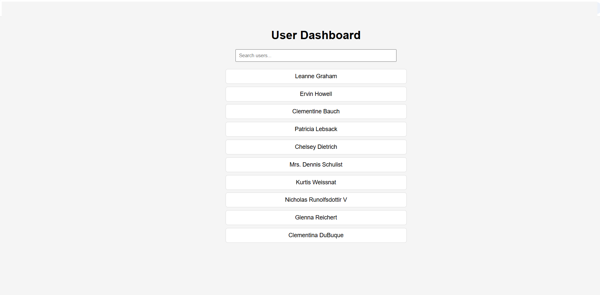
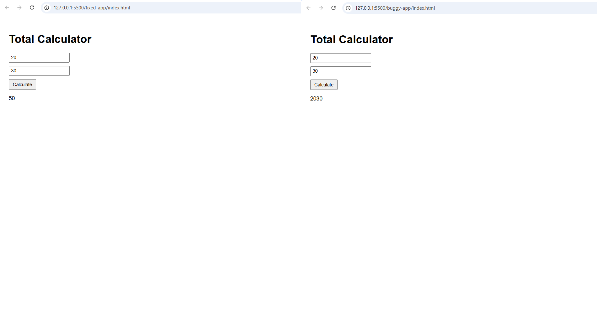

Junior Frontend Developer
Building reliable web applications with React and JavaScript.
I enjoy turning requirements into simple, functional interfaces and learning how the systems behind them work.
01 — Selected work
Projects that show how I build software.
A small selection of projects focused on frontend development, APIs, debugging, and full-stack application development.

Frontend
React Client Dashboard
A React dashboard that fetches users from an external API and handles loading, errors, search, and reusable component structure.
- React
- JavaScript
- REST API

Maintenance & debugging
Frontend Bug Fix & Refactor
A debugging and refactoring exercise built around an existing codebase: identify issues, document root causes, apply fixes, and improve maintainability without changing the intended behavior.
- JavaScript
- HTML
- CSS
02 — Approach
How I approach software development.
Understand
I start by understanding the requirement, the existing code, and the problem the software needs to solve.
Build
I focus on simple, functional solutions before adding unnecessary complexity.
Debug & Refactor
I investigate problems, identify their causes, and improve code while keeping the intended behavior in mind.
Learn
I use each project to strengthen my understanding of frontend development and the systems behind it.
03 — Currently building
CiteSniff
An evidence-first research assistant focused on finding verifiable supporting evidence before generating citations.